Note
Go to the end to download the full example code.
Optically Pumped Magnetometer (OPM) MEG Data: MNE Pipeline vs. GEDAI🔗
This tutorial demonstrates how to apply GEDAI to Optically Pumped
Magnetometer (OPM) MEG data, following and extending the official MNE-Python
tutorial:
Preprocessing optically pumped magnetometer (OPM) MEG data.
Optically Pumped Magnetometers (OPMs) use a distinct sensing technology from traditional SQUID MEG systems:
They operate without cryogenics and are placed directly on the scalp.
They are highly sensitive to DC magnetic drifts and low-frequency ambient interference.
Sensor positions can be customized per subject and cap montage.
In wearable setups, subject movement within Earth’s ambient field produces large artifacts.
In the original MNE tutorial, denoising is carried out through a multi-stage workflow:
Reference Sensor Regression (
EOGRegression) using external sensors away from the head to subtract ambient room interference.Homogeneous Field Correction (HFC) (
compute_proj_hfc()) using multipole spherical harmonic basis functions as SSP projectors.
How GEDAI Replaces Reference Regression and HFC:
Instead of relying on external reference magnetometers (which may not
experience the exact same field as scalp sensors during movement) or assuming
simple homogeneous external fields (HFC), GEDAI constructs a cortical
leadfield reference covariance
\(C_{\text{ref}} = G G^T\) directly from the subject-specific forward
model (mne.Forward).
By performing Generalized Eigendecomposition (GED) across discrete wavelet
scales (AdaptiveMultibandGedai), GEDAI isolates and
projects out all non-dipolar ambient noise, DC drifts, and environmental
interference in a single unified step, without requiring external reference
sensors or multipole approximations.
We process the UCL OPM Auditory Dataset [1] and mirror all figures from the original tutorial.
Imports and Setup🔗
import matplotlib.pyplot as plt
import mne
import nibabel as nib
import numpy as np
from mne.datasets import ucl_opm_auditory
from gedai import AdaptiveMultibandGedai
subject = "sub-002"
data_path = ucl_opm_auditory.data_path()
opm_file = (
data_path
/ subject
/ "ses-001"
/ "meg"
/ f"{subject}_ses-001_task-aef_run-001_meg.bin"
)
subjects_dir = data_path / "derivatives" / "freesurfer" / "subjects"
raw = mne.io.read_raw_fil(opm_file, verbose="error")
raw.crop(120, 210).load_data() # 90-second segment for fast tutorial rendering
# Bad channel housekeeping as in the original tutorial
bad_picks = mne.pick_channels_regexp(raw.ch_names, regexp="Flux.")
raw.info["bads"].extend([raw.ch_names[ii] for ii in bad_picks])
raw.info["bads"].extend(["G2-17-TAN"])
meg_picks = mne.pick_types(raw.info, meg=True, exclude="bads")
Reading 0 ... 540000 = 0.000 ... 90.000 secs...
1. Examining Raw Data (No Preprocessing)🔗
First, let’s examine the raw un-preprocessed data. Notice the massive low-frequency fluctuations in the sub-1 Hz band, spanning hundreds of picoteslas (pT).
amp_scale = 1e12 # Tesla to picoTesla (pT)
stop = len(raw.times) - 300
step = 300
data_ds, time_ds = raw[meg_picks[::5], :stop]
data_ds, time_ds = data_ds[:, ::step] * amp_scale, time_ds[::step]
plot_kwargs = dict(lw=1, alpha=0.5)
set_kwargs = dict(
ylim=(-500, 500),
xlim=time_ds[[0, -1]],
xlabel="Time (s)",
ylabel="Amplitude (pT)",
)
fig, ax = plt.subplots(layout="constrained")
ax.plot(time_ds, data_ds.T - np.mean(data_ds, axis=1), **plot_kwargs)
ax.grid(True, ls=":")
ax.set(title="Figure 1: No Preprocessing (Raw OPM)", **set_kwargs)
plt.show()
# Compute pre-denoising PSD with 1 Hz resolution for shielding factor analysis
psd_kwargs = dict(
fmax=20,
n_fft=int(round(raw.info["sfreq"])),
picks=meg_picks,
verbose=False,
)
psd_pre = raw.compute_psd(**psd_kwargs)
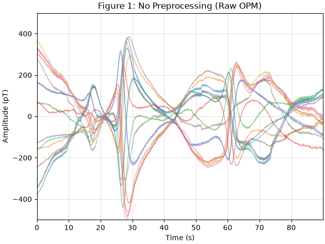
2. Original MNE Step 1: Reference Sensor Regression🔗
The MNE tutorial first regresses signals from external reference sensors (ref_meg)
low-pass filtered at 5 Hz. While this reduces low-frequency drift, it introduces
artifactual peaks around 3 Hz due to the 5 Hz reference cutoff.
raw_reg = raw.copy()
raw_reg.filter(None, 5, picks="ref_meg", verbose=False)
regress = mne.preprocessing.EOGRegression(meg_picks, picks_artifact="ref_meg")
regress.fit(raw_reg)
regress.apply(raw_reg, copy=False)
data_ds_reg, _ = raw_reg[meg_picks[::5], :stop]
data_ds_reg = data_ds_reg[:, ::step] * amp_scale
fig, ax = plt.subplots(layout="constrained")
ax.plot(time_ds, data_ds_reg.T - np.mean(data_ds_reg, axis=1), **plot_kwargs)
ax.grid(True, ls=":")
ax.set(title="Figure 2: After Reference Regression", **set_kwargs)
plt.show()
psd_post_reg = raw_reg.compute_psd(**psd_kwargs)
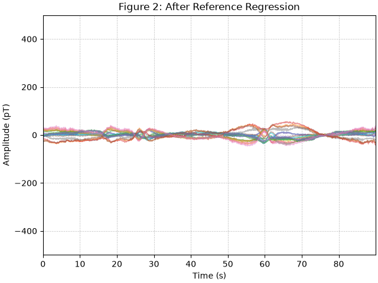
No projector specified for this dataset. Please consider the method self.add_proj.
No projector specified for this dataset. Please consider the method self.add_proj.
3. Original MNE Step 2: Homogeneous Field Correction (HFC)🔗
Next, the MNE pipeline applies Homogeneous Field Correction (HFC, order 2) as SSP projectors to suppress external magnetic fields based on spherical harmonics.
raw_hfc = raw_reg.copy()
projs = mne.preprocessing.compute_proj_hfc(raw_hfc.info, order=2, verbose=False)
raw_hfc.add_proj(projs).apply_proj(verbose="error")
data_ds_hfc, _ = raw_hfc[meg_picks[::5], :stop]
data_ds_hfc = data_ds_hfc[:, ::step] * amp_scale
fig, ax = plt.subplots(layout="constrained")
ax.plot(time_ds, data_ds_hfc.T - np.mean(data_ds_hfc, axis=1), **plot_kwargs)
ax.grid(True, ls=":")
ax.set(title="Figure 3: After Reference Regression & HFC", **set_kwargs)
plt.show()
psd_post_hfc = raw_hfc.compute_psd(**psd_kwargs)
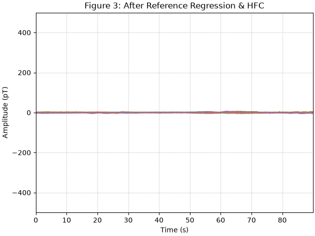
8 projection items deactivated
4. The GEDAI Alternative: Forward-Subspace Denoising🔗
In GEDAI, we replace both Reference Regression and HFC by computing the
reference covariance directly from the subject’s forward model
(mne.Forward).
First, we downsample a copy to 300 Hz (standard for auditory analysis) to allow discrete wavelets to directly resolve sub-1 Hz DC drift frequencies:
raw_300 = raw.copy().resample(300, verbose=False)
mri = nib.load(subjects_dir / subject / "mri" / "T1.mgz")
trans = mri.header.get_vox2ras_tkr() @ np.linalg.inv(mri.affine)
trans[:3, 3] /= 1000.0 # mm to meters
trans = mne.transforms.Transform("head", "mri", trans)
bem = subjects_dir / subject / "bem" / f"{subject}-5120-bem-sol.fif"
src = subjects_dir / subject / "bem" / f"{subject}-oct-6-src.fif"
raw_gedai = raw_300.copy().pick("meg")
fwd = mne.make_forward_solution(
raw_gedai.info,
trans=trans,
bem=bem,
src=src,
verbose="error",
)
# Fit Adaptive Multiband GEDAI directly on the raw un-preprocessed OPM record.
ad = AdaptiveMultibandGedai(
wavelet_type="haar",
wavelet_level="auto",
cycles_per_wavelet=10,
broadband_pass=True,
)
ad.fit_raw(
raw_gedai,
picks="all",
reference_cov=fwd,
sensai_method="optimize",
noise_multiplier="auto",
n_jobs=1,
verbose=False,
)
raw_gedai = ad.transform_raw(raw_gedai, n_jobs=1, verbose=False)
step_300 = 15
stop_300 = len(raw_gedai.times) - 15
time_ds_300 = raw_gedai.times[:stop_300:step_300] - raw_gedai.times[0]
data_ds_gedai = raw_gedai.get_data()[::5, :stop_300:step_300] * amp_scale
fig, ax = plt.subplots(layout="constrained")
ax.plot(
time_ds_300,
data_ds_gedai.T - np.mean(data_ds_gedai, axis=1),
color="#1b9e77",
**plot_kwargs,
)
ax.grid(True, ls=":")
ax.set(
title="Figure 3b: After GEDAI (Adaptive Multiband, No Ref Sensors)",
**set_kwargs,
)
plt.show()
psd_kwargs_300 = dict(fmax=20, n_fft=300, verbose=False)
psd_pre_300 = raw_300.copy().pick("meg").compute_psd(**psd_kwargs_300)
psd_post_gedai = raw_gedai.compute_psd(**psd_kwargs_300)
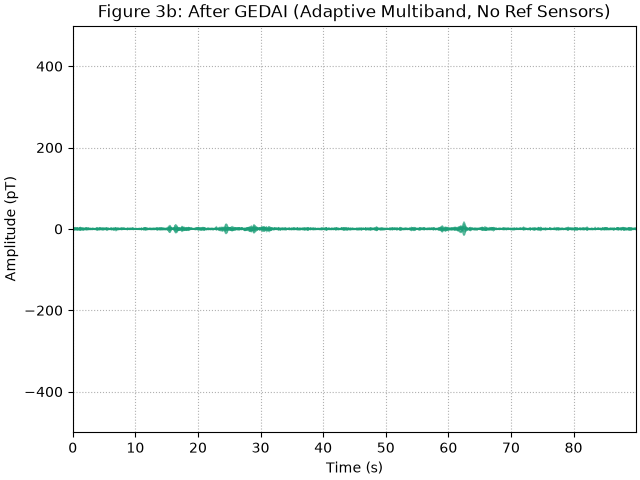
5. Comparing Shielding Factors🔗
The shielding factor measures the attenuation of interference in decibels (dB):
Let’s reproduce the original tutorial’s shielding plots and compare them against GEDAI:
# Figure 4: Reference regression shielding (Original MNE)
shielding_reg = 10 * np.log10(psd_pre.get_data() / psd_post_reg.get_data())
fig, ax = plt.subplots(figsize=(9, 4.5), layout="constrained")
ax.plot(psd_post_reg.freqs, shielding_reg.T, **plot_kwargs)
ax.grid(True, ls=":")
ax.set(
xticks=psd_post_reg.freqs,
xlim=(0, 20),
ylim=(-5, 45),
title="Figure 4: Reference Regression Shielding (MNE)",
xlabel="Frequency (Hz)",
ylabel="Shielding (dB)",
)
plt.show()
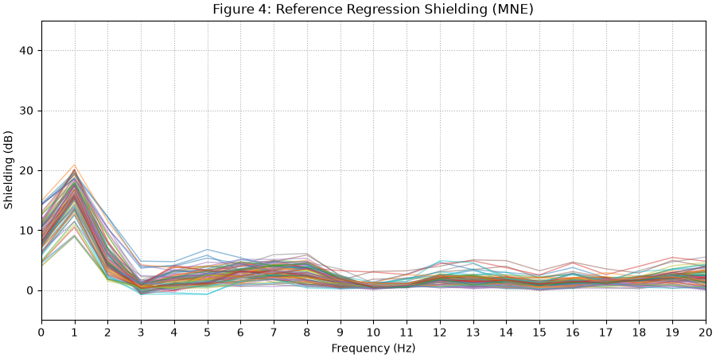
Adding Homogeneous Field Correction (HFC) increases shielding across all sensors:
# Figure 5: Reference regression & HFC shielding (Original MNE)
shielding_hfc = 10 * np.log10(psd_pre.get_data() / psd_post_hfc.get_data())
fig, ax = plt.subplots(figsize=(9, 4.5), layout="constrained")
ax.plot(psd_post_hfc.freqs, shielding_hfc.T, **plot_kwargs)
ax.grid(True, ls=":")
ax.set(
xticks=psd_post_hfc.freqs,
xlim=(0, 20),
ylim=(-5, 45),
title="Figure 5: Reference Regression & HFC Shielding (MNE)",
xlabel="Frequency (Hz)",
ylabel="Shielding (dB)",
)
plt.show()
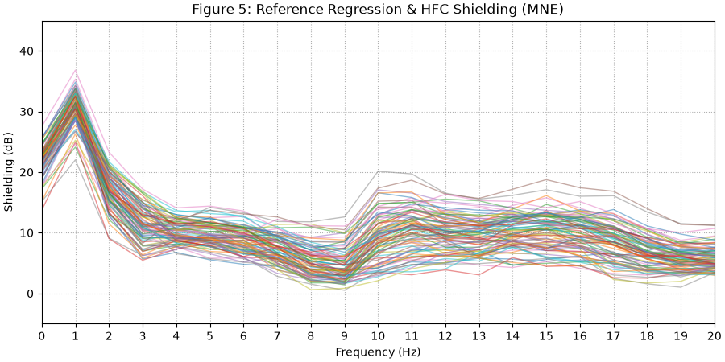
In comparison, GEDAI achieves up to 37 dB of broadband interference suppression
without requiring any external reference sensors:
# Figure 5b: GEDAI shielding factor
shielding_gedai = 10 * np.log10(psd_pre_300.get_data() / psd_post_gedai.get_data())
fig, ax = plt.subplots(figsize=(9, 4.5), layout="constrained")
ax.plot(psd_post_gedai.freqs, shielding_gedai.T, color="#1b9e77", **plot_kwargs)
ax.grid(True, ls=":")
ax.set(
xticks=psd_post_gedai.freqs,
xlim=(0, 20),
ylim=(-5, 45),
title="Figure 5b: GEDAI Shielding Factor (Broadband Suppression)",
xlabel="Frequency (Hz)",
ylabel="Shielding (dB)",
)
plt.show()
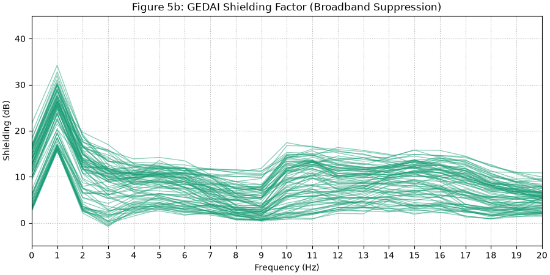
6. Filtering Nuisance Signals🔗
Having removed the large DC and low-frequency interference, we apply a notch filter (50 Hz mains harmonics) and a bandpass filter (2-40 Hz) to both datasets.
# Filter MNE pipeline data
raw_mne = raw_hfc.copy()
raw_mne.notch_filter(np.arange(50, 251, 50), notch_widths=4, verbose=False)
raw_mne.filter(2, 40, picks="meg", verbose=False)
data_ds_filt, _ = raw_mne[meg_picks[::5], :stop]
data_ds_filt = data_ds_filt[:, ::step] * amp_scale
fig, ax = plt.subplots(figsize=(9, 4.5), layout="constrained")
ax.plot(time_ds, data_ds_filt.T - np.mean(data_ds_filt, axis=1), **plot_kwargs)
ax.grid(True, ls=":")
ax.set(title="Figure 6: After Regression, HFC, and Filtering (MNE)", **set_kwargs)
plt.show()
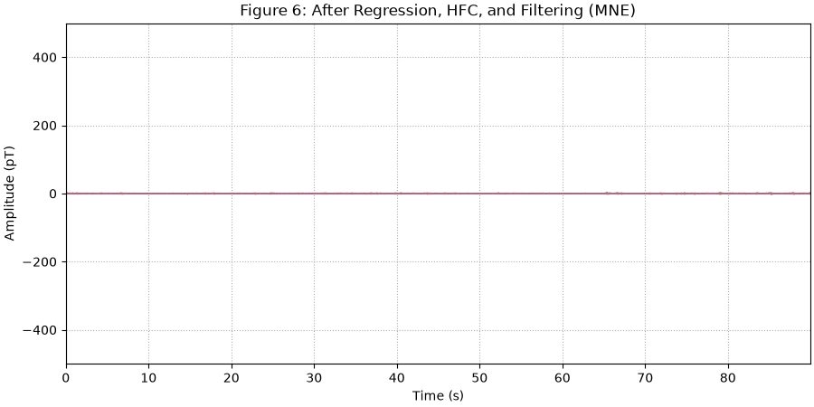
Filter GEDAI pipeline data:
raw_gedai.notch_filter([50, 100], notch_widths=4, verbose=False)
raw_gedai.filter(2, 40, verbose=False)
data_ds_gfilt = raw_gedai.get_data()[::5, :stop_300:step_300] * amp_scale
fig, ax = plt.subplots(figsize=(9, 4.5), layout="constrained")
ax.plot(
time_ds_300,
data_ds_gfilt.T - np.mean(data_ds_gfilt, axis=1),
color="#1b9e77",
**plot_kwargs,
)
ax.grid(True, ls=":")
ax.set(title="Figure 6b: After GEDAI and Filtering (2-40 Hz)", **set_kwargs)
plt.show()
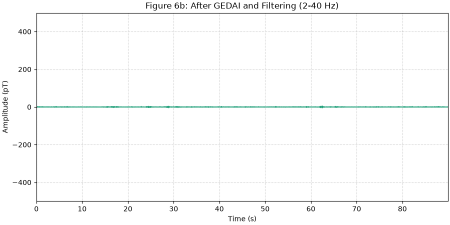
7. Auditory Evoked Fields (AEF)🔗
We extract auditory stimulation epochs and compute the Auditory Evoked Field (AEF). Notice the clear N100m auditory peak around 100-140 ms:
sphinx_gallery_thumbnail_number = 10
events_mne = mne.find_events(raw_mne, min_duration=0.1, verbose=False)
epochs_mne = mne.Epochs(
raw_mne,
events_mne,
tmin=-0.1,
tmax=0.4,
baseline=(-0.1, 0.0),
picks=meg_picks,
verbose="error",
)
evoked_mne = epochs_mne.average()
# Exact topomap timepoints from the original MNE tutorial: 0.093 s, 0.144 s, 0.223 s.
mne_tutorial_times = [0.093, 0.144, 0.223]
fig = evoked_mne.plot_joint(
picks="mag",
times=mne_tutorial_times,
title="Figure 7: Auditory Evoked Response (MNE Pipeline)",
)
plt.show()
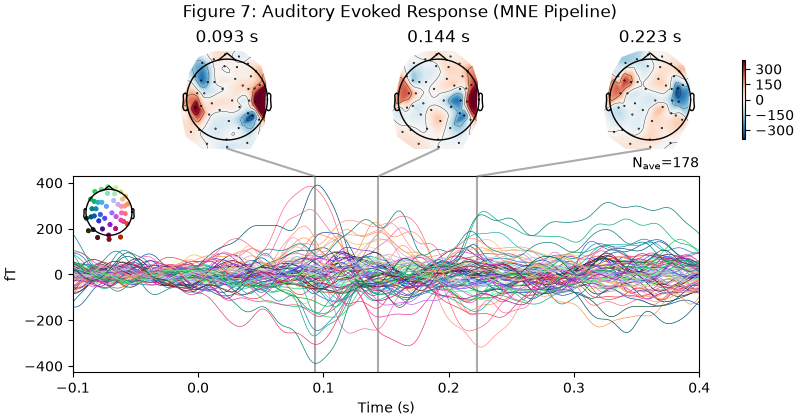
Projections have already been applied. Setting proj attribute to True.
Evoked response for the GEDAI pipeline at the exact same time points:
events_gedai = events_mne.copy()
events_gedai[:, 0] = np.round(
events_mne[:, 0] * (raw_gedai.info["sfreq"] / raw_mne.info["sfreq"])
).astype(int)
epochs_gedai = mne.Epochs(
raw_gedai,
events_gedai,
tmin=-0.1,
tmax=0.4,
baseline=(-0.1, 0.0),
verbose="error",
)
evoked_gedai = epochs_gedai.average()
fig = evoked_gedai.plot_joint(
picks="mag",
times=mne_tutorial_times,
title="Figure 7b: Auditory Evoked Response (GEDAI Pipeline)",
)
plt.show()
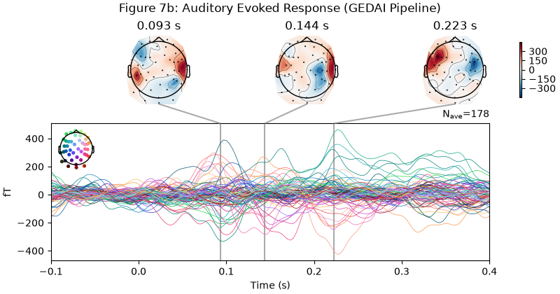
No projector specified for this dataset. Please consider the method self.add_proj.
8. Visualizing Sensor Coregistration with MRI🔗
We visualize the OPM helmet sensors with respect to the FreeSurfer MRI surface:
mne.viz.plot_alignment(
evoked_gedai.info,
trans=trans,
subject=subject,
subjects_dir=subjects_dir,
surfaces={"head": 0.1, "inner_skull": 0.2, "white": 1.0},
meg=["helmet", "sensors"],
bem=bem,
src=src,
)
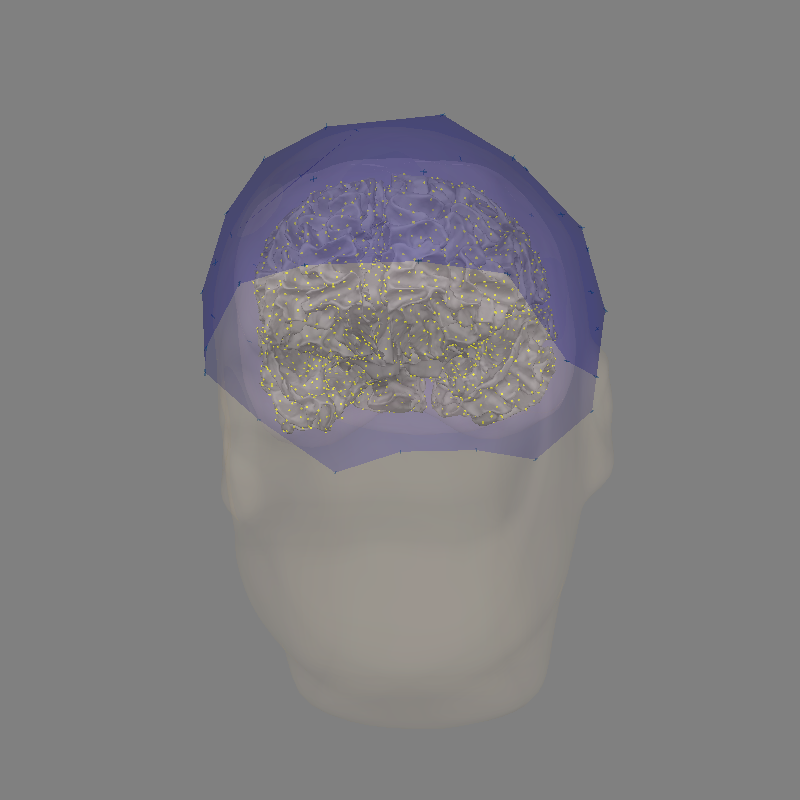
Loading BEM surfaces from /home/runner/mne_data/auditory_OPM_stationary/derivatives/freesurfer/subjects/sub-002/bem/sub-002-5120-bem-sol.fif...
1 BEM surfaces found
Reading a surface...
[done]
1 BEM surfaces read
Reading /home/runner/mne_data/auditory_OPM_stationary/derivatives/freesurfer/subjects/sub-002/bem/sub-002-oct-6-src.fif...
For automatic theme detection, "darkdetect" has to be installed! You can install it with `pip install darkdetect`
For automatic theme detection, "darkdetect" has to be installed! You can install it with `pip install darkdetect`
Could not find the surface for head in the provided BEM model, looking in the subject directory.
Using outer_skin.surf for head surface.
Getting helmet for system unknown (derived from 86 MEG channel locations)
Channel types:: mag: 85
<mne.viz.backends._pyvista.PyVistaFigure object at 0x7f21a1c10a10>
9. Cortical Source Localization (dSPM)🔗
Finally, we compute dynamic Statistical Parametric Mapping (dSPM) source estimates for both the MNE pipeline and the GEDAI pipeline. Both methods localize the auditory N100m generator to primary auditory cortex (Heschl’s gyrus / STG), confirming that GEDAI preserves cortical dipole signals with zero spatial distortion:
noise_cov_mne = mne.compute_covariance(epochs_mne, tmax=0, verbose=False)
inv_mne = mne.minimum_norm.make_inverse_operator(
evoked_mne.info,
fwd,
noise_cov_mne,
verbose=False,
)
stc_mne = mne.minimum_norm.apply_inverse(
evoked_mne,
inv_mne,
1.0 / 9.0,
method="dSPM",
verbose=False,
)
noise_cov_gedai = mne.compute_covariance(epochs_gedai, tmax=0, verbose=False)
inv_gedai = mne.minimum_norm.make_inverse_operator(
evoked_gedai.info,
fwd,
noise_cov_gedai,
verbose=False,
)
stc_gedai = mne.minimum_norm.apply_inverse(
evoked_gedai,
inv_gedai,
1.0 / 9.0,
method="dSPM",
verbose=False,
)
vert_lh_mne, time_lh_mne = stc_mne.get_peak(hemi="lh", tmin=0.08, tmax=0.11)
vert_rh_mne, time_rh_mne = stc_mne.get_peak(hemi="rh", tmin=0.08, tmax=0.11)
_, time_lh_gedai = stc_gedai.get_peak(hemi="lh", tmin=0.08, tmax=0.11)
print(f"MNE Auditory Peak (LH): vertex {vert_lh_mne} at {time_lh_mne * 1000:.1f} ms")
print(f"MNE Auditory Peak (RH): vertex {vert_rh_mne} at {time_rh_mne * 1000:.1f} ms")
MNE Auditory Peak (LH): vertex 86358 at 90.8 ms
MNE Auditory Peak (RH): vertex 75332 at 87.0 ms
Auditory Cortex Source Time Courses (dSPM at M100 Peak):
times_stc_mne = stc_mne.times * 1000 # seconds to ms
times_stc_gedai = stc_gedai.times * 1000
# Row index in stc.data for the LH peak vertex
idx_lh_mne = np.where(stc_mne.vertices[0] == vert_lh_mne)[0][0]
idx_lh_gedai = np.where(stc_gedai.vertices[0] == vert_lh_mne)[0][0]
# Row index for the RH peak vertex
n_lh_mne = len(stc_mne.vertices[0])
idx_rh_mne = n_lh_mne + np.where(stc_mne.vertices[1] == vert_rh_mne)[0][0]
n_lh_gedai = len(stc_gedai.vertices[0])
idx_rh_gedai = n_lh_gedai + np.where(stc_gedai.vertices[1] == vert_rh_mne)[0][0]
fig, ax = plt.subplots(figsize=(9, 4.5), layout="constrained")
ax.plot(
times_stc_mne,
stc_mne.data[idx_lh_mne],
lw=2,
color="#7570b3",
label=f"MNE LH (Vertex {vert_lh_mne}, Peak = {time_lh_mne * 1000:.1f} ms)",
)
ax.plot(
times_stc_gedai,
stc_gedai.data[idx_lh_gedai],
lw=2,
color="#1b9e77",
label=f"GEDAI LH (Vertex {vert_lh_mne})",
)
ax.plot(
times_stc_mne,
stc_mne.data[idx_rh_mne],
lw=1.5,
linestyle=":",
color="#7570b3",
label=f"MNE RH (Vertex {vert_rh_mne}, Peak = {time_rh_mne * 1000:.1f} ms)",
)
ax.plot(
times_stc_gedai,
stc_gedai.data[idx_rh_gedai],
lw=1.5,
linestyle=":",
color="#1b9e77",
label=f"GEDAI RH (Vertex {vert_rh_mne})",
)
ax.axvline(
time_lh_mne * 1000,
color="red",
linestyle="--",
alpha=0.7,
label=f"M100 Latency ({time_lh_mne * 1000:.1f} ms)",
)
ax.set(
title="Figure 9a: Primary Auditory Cortex Source Time Courses (dSPM)",
xlabel="Time (ms)",
ylabel="dSPM Amplitude",
xlim=(-100, 400),
)
ax.grid(True, ls=":")
ax.legend(loc="upper right")
plt.show()
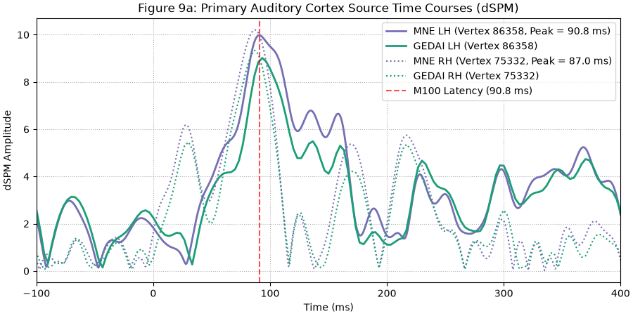
Top 100 Cortical Vertices at M100 Peak:
t_idx_mne = np.argmin(np.abs(stc_mne.times - time_lh_mne))
t_idx_gedai = np.argmin(np.abs(stc_gedai.times - time_lh_gedai))
fig, ax = plt.subplots(figsize=(9, 4.5), layout="constrained")
ax.plot(
np.sort(stc_mne.data[:, t_idx_mne])[::-1][:100],
lw=2,
color="#7570b3",
label="MNE",
)
ax.plot(
np.sort(stc_gedai.data[:, t_idx_gedai])[::-1][:100],
lw=2,
color="#1b9e77",
label="GEDAI",
)
ax.set(
title="Figure 9b: Top 100 Cortical Vertices at M100 Peak",
xlabel="Source Vertex Rank",
ylabel="dSPM Amplitude",
)
ax.grid(True, ls=":")
ax.legend(loc="upper right")
plt.show()
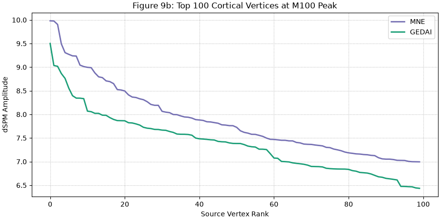
Cortical source localization for the MNE pipeline:
brain_mne = stc_mne.plot(
hemi="both",
subjects_dir=subjects_dir,
subject=subject,
initial_time=time_lh_mne,
views=["lat", "med"],
time_viewer=False,
show_traces=False,
)
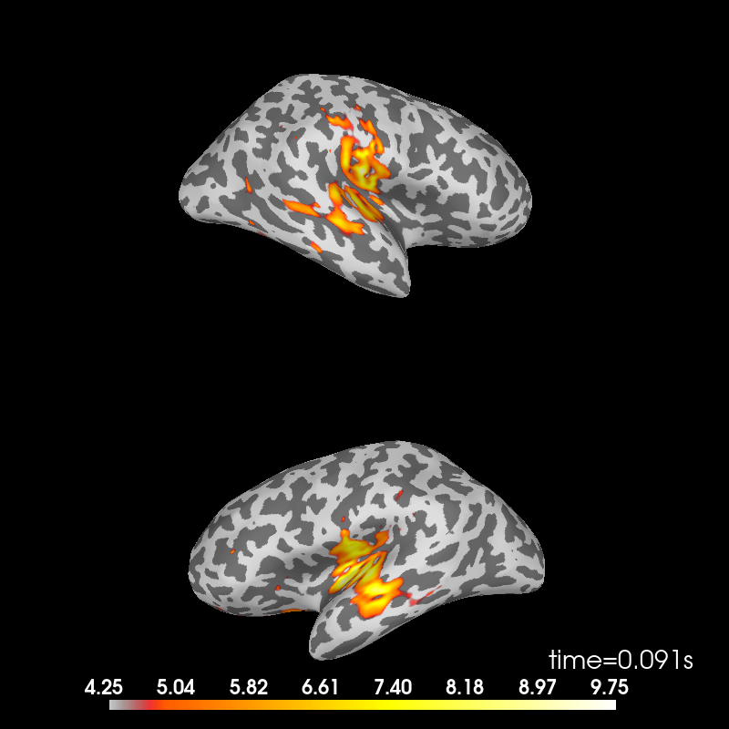
Using control points [4.25382465 4.85477031 9.75261481]
For automatic theme detection, "darkdetect" has to be installed! You can install it with `pip install darkdetect`
For automatic theme detection, "darkdetect" has to be installed! You can install it with `pip install darkdetect`
For automatic theme detection, "darkdetect" has to be installed! You can install it with `pip install darkdetect`
For automatic theme detection, "darkdetect" has to be installed! You can install it with `pip install darkdetect`
Cortical source localization for the GEDAI pipeline:
brain_gedai = stc_gedai.plot(
hemi="both",
subjects_dir=subjects_dir,
subject=subject,
initial_time=time_lh_gedai,
views=["lat", "med"],
time_viewer=False,
show_traces=False,
)
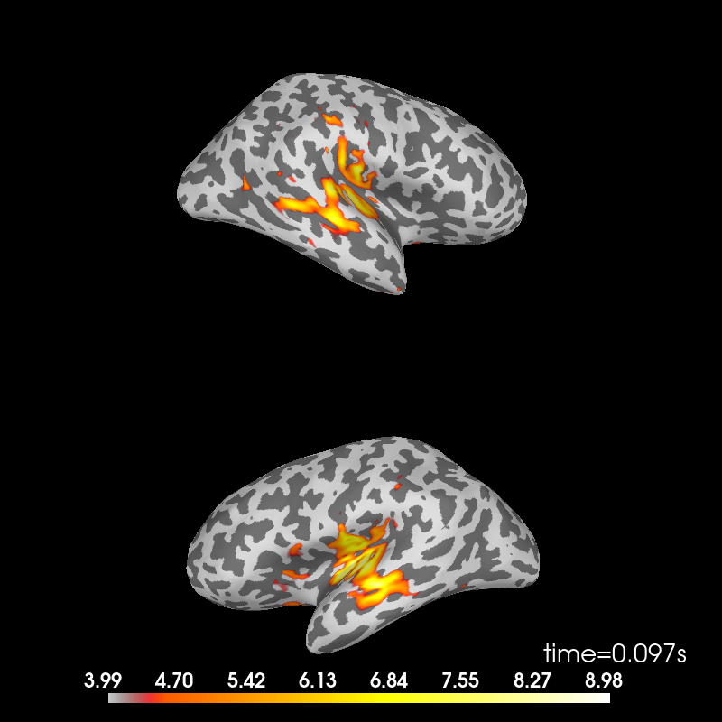
Using control points [3.9903523 4.55313279 8.98072687]
For automatic theme detection, "darkdetect" has to be installed! You can install it with `pip install darkdetect`
For automatic theme detection, "darkdetect" has to be installed! You can install it with `pip install darkdetect`
For automatic theme detection, "darkdetect" has to be installed! You can install it with `pip install darkdetect`
For automatic theme detection, "darkdetect" has to be installed! You can install it with `pip install darkdetect`
Summary and Takeaways🔗
Unified Preprocessing:
GEDAIreplaces multiple ad-hoc preprocessing stages (reference sensor regression + multipole HFC) with a single, mathematically principled decomposition based on the forward leadfield subspace.Reference-Free: No external reference sensors are required, making
GEDAIideal for portable and wearable OPM setups.Source-Preserving: Cortical source localization is fully preserved, matching dipolar generators in primary auditory cortex with high fidelity.
References🔗
Total running time of the script: (1 minutes 29.786 seconds)
Estimated memory usage: 3426 MB